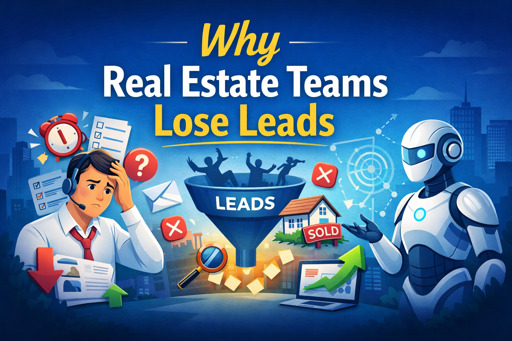

Understanding the biggest lead management challenges in modern real estate sales.

Real estate businesses generate thousands of property inquiries every month through online advertising, listing portals and social media campaigns. However, a large percentage of these leads never convert into real sales opportunities.
The problem is not demand. The real issue lies in how these leads are handled after they enter the sales pipeline.
Property buyers usually contact multiple agents at the same time. If one sales team responds faster than the others, that team gains a significant advantage.
When responses are delayed by even a few hours, prospects often move to another agent or property.
Many real estate teams still rely on spreadsheets, manual calls and scattered follow-up systems.
This leads to inconsistent lead management and many prospects are never contacted again.
Sales agents often spend significant time speaking with prospects who have low buying intent or unrealistic budgets.
Without structured lead qualification, valuable sales time is wasted.
Most brokerage firms lack visibility into their sales pipeline.
Modern real estate companies are adopting AI-powered automation systems to solve these problems.
These platforms automatically capture leads, qualify prospects and manage follow-ups across messaging platforms.
SalesSetu is designed specifically for modern real estate sales teams.
It captures leads from ads and forms, qualifies prospects using AI voice agents and automates WhatsApp follow-ups.
This ensures every inquiry receives attention and agents focus only on serious buyers.
Learn more about the platform here: SalesSetu